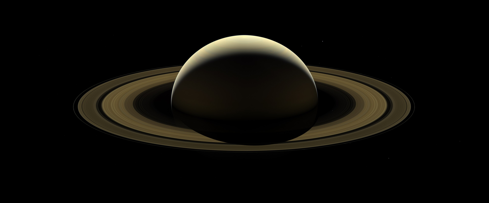

🌪🪐Particle‐trapping injection flux tubes in Saturn's magnetosphere and high‐band electron cyclotron harmonic waves therein
2025, Geophysical Research Letters
We find the electron cyclotron harmonic (ECH) wave can be used to identify and distinguish two kinds of flux tubes in the Saturn magnetosphere. Data are mainly from Cassini.
Saturn is both beautiful and scary. 👋💀
